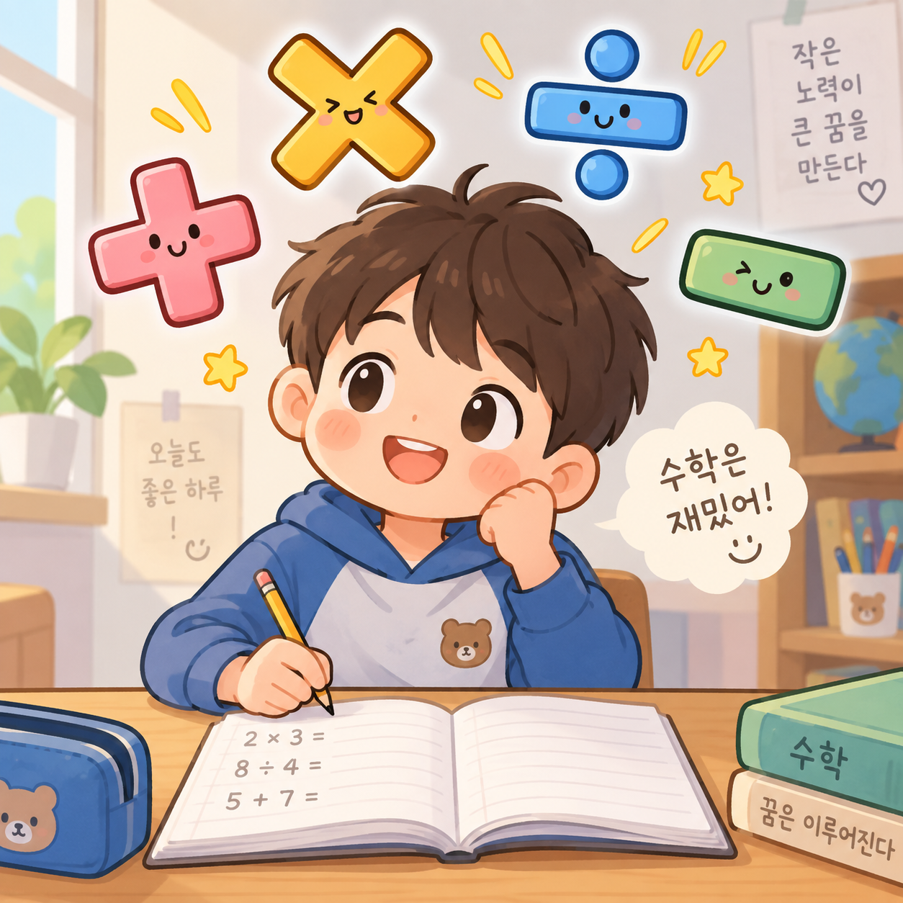

수학 연습 시작 →
차근차근, 한 문제씩
수학 연습
＋
처음으로
무엇을 풀어 볼까요?
＋
덧셈
두 자리부터 네 자리까지
×
곱셈
계산 형태를 골라 연습해요
÷
나눗셈
몫과 나머지를 알아봐요
2 × 9
구구단 게임
연습 또는 60초 도전
틀린 문제 다시 풀기
문제
✏️ 계산 메모장
손가락으로 자유롭게 써요
연필
지우개
전체 지우기
답
나머지
정답 확인
다음 문제 →
60초 도전 시작
브라우저에서 저장을 허용하지 않아 이번 학습 기록만 유지됩니다.